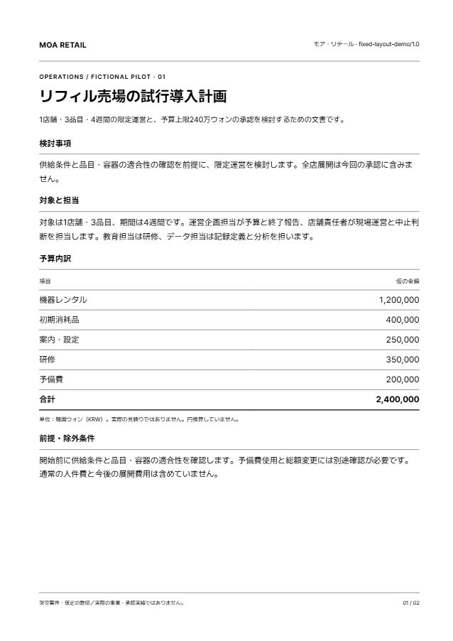
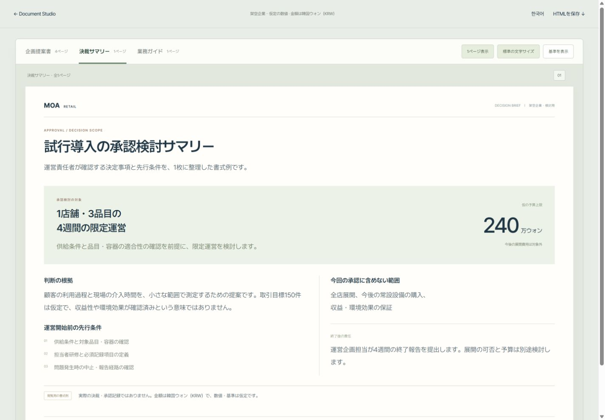

01 / RULES決めたルールを保つ
同じ2ページを白黒A4・整列レポート・横型提案で表示。ページや言語が変わっても、余白・文字・色・数値整列を維持する例です。
固定ルールを比較する ↗管理者が確認した文体・デザイン・検討基準をCompany Packにまとめ、文書制作の専門スキルと組み合わせます。社員の依頼を、構成・執筆・デザイン・編集可能なPowerPoint出力へつなぐための、オープンソースの実験です。
現在の評価対象：架空の資料、または配布許可を確認した公開資料。非公開の社内資料からの内部配布は未対応です。
文体・用語・デザイン・検討基準
Company Pack構成・調査・執筆・デザイン・出力
Document Skills管理者が対応環境へ導入し、動作を確認
確認したHTML / 編集可能なPPTX
会社ルールを整える工程と、依頼ごとに資料を作る工程は別です。Document Studioは、その両方を支えるスキルとスクリプトをまとめています。
分析・配布の権限を確認し、PDF・PPTXの参考資料を選びます。
提案された文体・デザイン・出典などを確認し、承認したCompany Packとして版を管理します。
会社Packと基本スキル8個、必要な言語モジュールをまとめます。導入は権限のある管理者が別途行います。
Company Packは、会社別の規則と根拠をまとめたものです。公開エクスポーターは元のPDF/PPTXやフォント本体を同梱しません。パッケージ生成、インストール、新規依頼の動作確認は別の工程です。
たとえば「役員が検討する4週間の試行導入案を、日本語PPTXで作りたい」と依頼します。社員が内部スキル名を一つずつ選ぶ必要はなく、窓口が不足する条件を確認します。
report-html-pptx目的・読み手・言語・形式を整理し、会社別依頼では使用する承認済みCompany Packを明示的に選択・検証します。
読み手の判断から構成を計画。根拠が足りなければ調べ、必要に応じて構成に戻ります。
Architecture / Research原稿・数値・条件を整えます。導入した日本語・韓国語モジュールで対象言語を確認します。
Writing / Language確定した原稿をHTMLへ。必要な図解・画像を選び、画像制作が必要な場合だけ担当スキルを使います。
Design / Visual Assets本文・書体・余白・図表・画像の収まりを確認。不備があれば、関係する工程へ戻ります。
Browser / Editorial QAPPTXを求めた場合は編集可能な要素に変換し、文字保持・表示・編集性と未確認範囲を確認します。
HTML-to-PPTX / QA導入先のAIが、役割別の指示とスクリプトを使って進める設計です。調査・画像制作は必要なときに行い、原稿のみ・HTMLのみの依頼は対応する段階で完了します。部分修正では、影響する工程とその後の確認を更新します。
基本スキル8個に、日本語・韓国語の校閲モジュールを必要に応じて追加します。言語モジュールを導入していない場合は、専門的な言語確認を実施済みとして扱いません。
| 役割 | Skill | 引き継ぐ内容 |
|---|---|---|
| 管理者の参考資料分析 | company-profile-analyzer | 資料の特徴・根拠、Company Packの確認と承認 |
| 制作の窓口 | report-html-pptx | 会社Packの選択、条件整理、工程の引き継ぎ |
| 構成 | document-architecture | 文書の目的・読み手・説明順序 |
| 必要な調査 | document-research | 主張や原稿を変える根拠の確認 |
| 執筆 | document-writing | 最終言語の原稿、見出し、注記 |
| 日本語・韓国語確認（選択導入） | business-japanese-translation / business-korean-translation | 対象言語の自然さ、意味・条件・数値の対照 |
| HTMLデザイン | document-design | 実際の文書構成、図表・画像と本文の関係 |
| 必要な画像制作 | visual-assets | 具体的な説明のための画像・図版 |
| PowerPoint出力 | html-to-pptx | 位置や文字の実測、編集可能なPPTX、出力確認 |
同梱しただけで会社ルールの適用が確認できたことにはなりません。導入時は新しい依頼で、使用したPackのID・版、生成物、実施した確認を検証します。
HTMLは、原稿とレイアウトを制作・確認するための原本です。出力時は配置と文字の組版を測り、PowerPointのテキスト・図形・画像として組み直します。
会議直前の数値修正、担当者名の更新、取引先向けの文章調整を、PowerPoint上で続けられます。見た目の再現性と、業務で編集できることの両方を確認する設計です。
原稿とレイアウトを確認
位置・寸法・書体を読み取る
文字・図形・画像を配置
表示と編集性を検証
編集可能な要素として扱える範囲は、対応するHTML/CSSによります。複雑な装飾や一部のSVGは画像として保持します。表の文字が編集可能でも、PowerPointの表オブジェクトになるとは限りません。
出力後は実際のPowerPointまたはLibreOfficeで、文字の欠落・改行・書体・画像位置・編集性を確認します。書体や実行環境によって差が生じるため、すべてのHTMLで完全一致を保証するものではありません。
現在公開しているWeb作例は、HTML表示の確認例です。これらの作例のPPTX変換・実機表示は未検証です。実際の生成・変換・出力確認は、導入した環境で行います。
変換と確認の仕様を読む ↗会社基準の維持、読み手別の構成、表現の自由度。関心のある作例から確認できます。

01 / RULES同じ2ページを白黒A4・整列レポート・横型提案で表示。ページや言語が変わっても、余白・文字・色・数値整列を維持する例です。
固定ルールを比較する ↗
02 / PURPOSE同じ案件を、企画提案書・決裁サマリー・業務ガイドに。判断する人と行動する人で、情報の順序を変える例です。
目的別の文書を見る ↗実験的・没入型の設定で、要点を1ページに再編集。数値と条件を保ちながら、比喩や読む順序を変える例です。
創造性を広げた例を見る ↗作例は架空の案件です。会社名・目標・費用は仮定で、予算は240万ウォン（KRW）。画像は生成コンセプトです。表示の測定は静的HTML例に限り、AIの新規生成や実際の企業成果を検証したものではありません。
最初の目的は、自社への全面配布ではなく、仕組みと出力を担当者の環境で確かめることです。現在の対応範囲と、実際に確認する工程を分けて判断できます。
現在の制約、必要な権限、会社Packとスキルの役割を確認。
同梱の独立した小売デモで、出力内容とマニフェストを確認。
対応環境でPackのID/版と、生成物・確認状態を確認。
架空の小売企業の運営責任者が検討する、4週間の試行導入の企画提案書を、日本語のHTMLで作成し、確認後に編集可能なPPTXへ変換してください。
1店舗・3品目・予算上限240万ウォン（KRW）という仮定を維持してください。
費用内訳、担当者、週別の計画、成功基準と中止条件を含めてください。
仮定と実際に確認した事実を区別し、原稿・HTML表示・PPTX出力で実施した確認と未確認の範囲を示してください。
閲覧用ファイルです。会社別プラグインのインストーラーとは別です。
AIを組織の仕事にどうつなぐか、実験しながら検証する個人のプロジェクトです。この方向に関心があれば、GitHubのStarで保存してください。